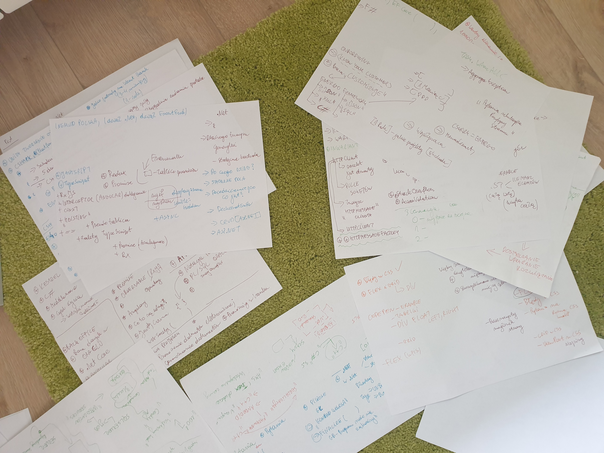
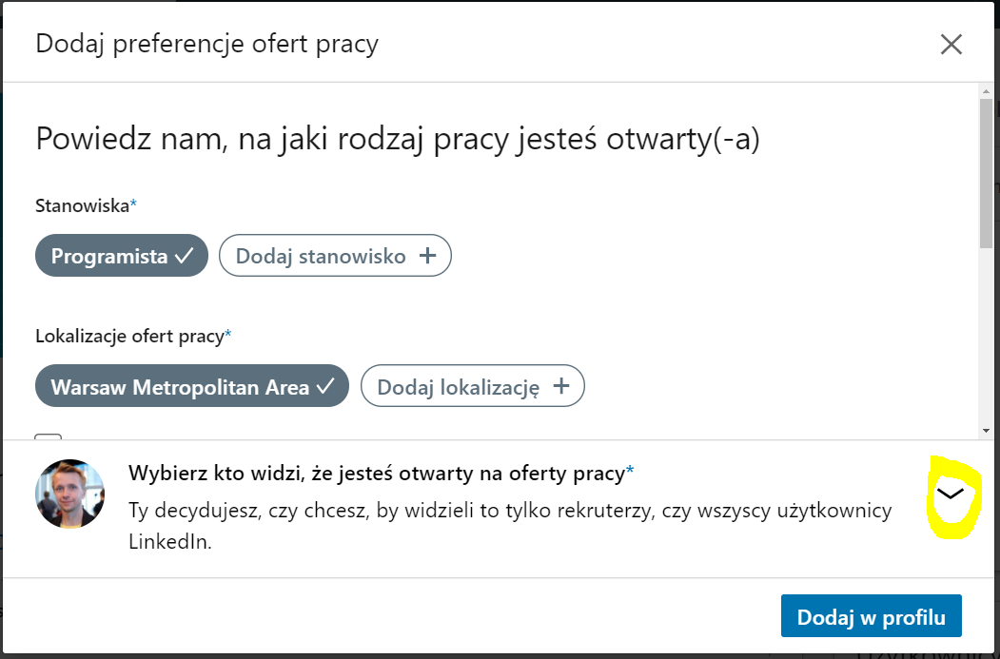
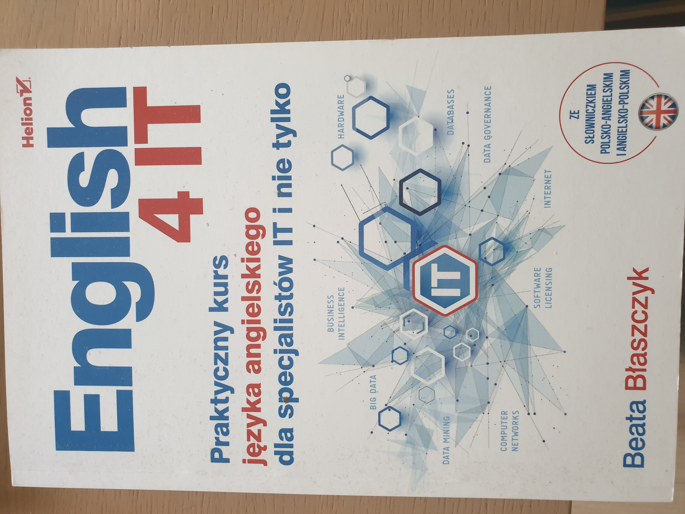
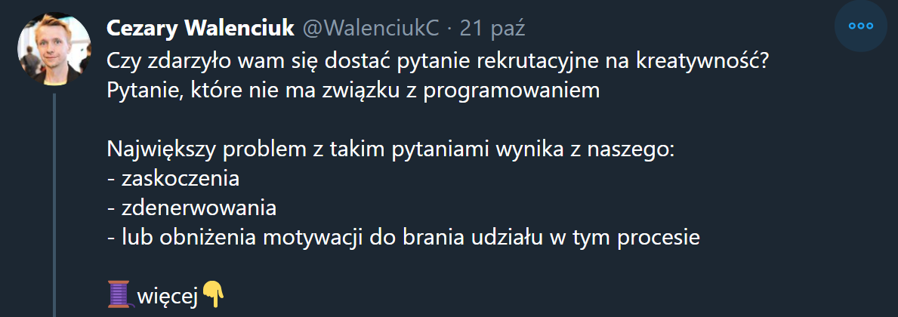

Pytania rekrtuacyjne czyli dalsza kariera
Cezary Walenciuk
Pytania rekrtuacyjne czyli dalsza kariera
Pogadajmy o COVID?
LinkedIN i CV, czyli zadbaj o swój profil
Jak to jest z tym Angielskim
Stan psychiczny, a raczej jak podejść do procesu
Przykładowe Pytania rekrutacyjne:
Przykładowe zadania przed współdzielonym ekranem bądź tablicą
Pytania miękkie, czyli kultura pracy
Pytania z kwasu, czyli test kreatywności
B2B czy umowa o pracę . Dokładna analiza. Co jest lepsze.
Okres wypowiedzenia
Jaką wiedzę trzeba zgłębiać, aby kariera miała odpowiedni kierunek?
Kiedyś zrobiłem prelekcje na temat szukania pracy jako junior
Copyright © Cezary Walenciuk
Nawet ją wygłosiłem lutym 2020 r.w Katowicach na grupie CTech
Postanowiłem stworzyć lepszą prelekcje

Copyright © Cezary Walenciuk
Copyright © Cezary Walenciuk
Jak wygląda teraz rynek pracy?
Wszystko jest naczyniem połączonym
Przykład UBER zwolnił dużo programistów
FireFox zwolnił programistów
Copyright © Cezary Walenciuk
Z drugiej strony są sektory które potrzebują jeszcze wiecej pracowników
Nie ma natomiast nowych projektów, a to znaczy, że start kariery jest trudniejszy
Szukanie pracy. Dziś
Zdalne szukanie pracy jest łatwiejsze
Jednego dnia miałem 3 rozmowy
Fizycznie nie byłoby to możliwe
Copyright © Cezary Walenciuk
Dlaczego warto szukać pracy cały czas?
Co daje szukanie pracy?
Obniżyasz swój poziom strachu związany ze swoją karierą, gdy siedzisz w jednej firmie bardzo długo
Dostajesz informacje zwrotną czego nie wiesz w kontekście danego stanowiska
Przygotowujesz się psychiczne na sytuacje utraty pracy
Co daje szukanie pracy?
Możesz sprawdzić czy możesz zarabiać więcej
Zdobywasz umiejętność dobrej prezentacji siebie na rozmowach
Odkurzasz swoje umiejętności
Stawia tobie pytanie "co chcesz od życia i pracy"
LinkedIN i CV, czyli zadbaj o swój profil
Copyright © Cezary Walenciuk
No to co mam napisać w CV?
Copyright © Cezary Walenciuk
Copyright © Cezary Walenciuk
Co móżna mówić o CV
Czy zdjęcie jest potrzebne?
Czy CV powinno być fikusio graficzne?
Co jest naprawdę ważne?
Napewno zrobiłeś coś dla kogoś. Coś co mówi, że jesteś wspaniały
Ludzie pracują wiele lat w swoich firmach i umią tylko opowiadać o swoich obowiązkach
Pytanie: Co przez te lata/miesiące robiłeś?
To jest najważniejsza informacja w CV, jak i w przyszłej rozmowie
Warto sobie robić notatki bo możesz nie pamiętać co robiłeś 6 lat temu
Okej.
Na ile sposobów można powiedzieć : Rozwój aplikacji
Takie doświadczenia też są potrzebne w twoim CV
Jak to jest z tym Angielskim
Jest początek września 2020 i mam zaktualizowane CV?
Copyright © Cezary Walenciuk

Copyright © Cezary Walenciuk
Jeżeli startujesz na stanowiska na 9.000 zł netto.
Jak skorzystałem z serwisu Turbo tłumaczenia, aby przetłumaczyć swoje polskie CV.
Angielski i realia
W ofertach pracy jest napisane, że angielski ma być na poziomie B2,C1
Przygotuj się na rozmowy techniczne po angielsku
Testowanie języka też jest wykorzystywane jako test prawdy
Angielski i realia
Nawet jeśli umiesz angielski to pytanie czy znasz pojęcia techniczne po angielsku

Copyright © Cezary Walenciuk
Copyright © Cezary Walenciuk
Copyright © Cezary Walenciuk
Książki programistyczne najlepiej czytać po angielsku
Anatomia rozmowy o pracy
Aby Ciebie zmotywować dostajesz skrót pracy do której aplikujesz
Mówisz o swoich najciekawszych projekach
Dostajesz pytania kwalifikacyjne
Pytasz się na temat stanowiska
Stan psychiczny, a raczej jak podejść do procesu
Copyright © Cezary Walenciuk
Copyright © Cezary Walenciuk
Dla wielu ludzi pracowanie dla Google czy Microsoftu jest marzeniem!
Historia pewnej rozmowy 3 amerykanami, architektami.
Nawet jeśli zawaliś pytania czy twoje CV nie pasuje do stanowiska.
To wciąż masz szanse znaleźć prace
Copyright © Cezary Walenciuk
Copyright © Cezary Walenciuk
Poległem bo nie wiedziałem jak : jest "szyna" po angielsku,
Przy pytaniu Innet Join i Outer Join zapomniałem jak się mówi zbiór po angielsku
Dostałem też kiedyś pytanie : JaggedArray
Przykładowe Pytania rekrutacyjne
1. Proszę podać róźnice pomiędzy typem wartościowym, a refercyjnym?
2. Co to jest UnBoxing i Boxing?
2. Podchwytlie pytania z Task.Delay.
3. Podchwytliwe pytanie na temat domknięć w C#
3. Pytania na poliformizm
4. Róźnica między interfejsem, a klasą abstrakcyjną
6. Co robi override w C#?
1. Co robi metoda Finalize, Dispose?
2. Jak działa Garabe Collector według pana?
2. Czy Garbage Collector poradzi sobie z referencja cykliczną?
3. Jak Garabe Collector oznacza elementy.
Jak działa porównanie stringów
Dlaczego tworzymy typy generyczne?
Jak możemy ograniczać generyki? (pytanie nie w prost)
Dziedziczenie po co jest ?
Co jest lepsze dziedziczenie czy kompozycja?
Róźnica pomiędzy IEnumerable, IList, IQueryable
Róźnica pomiędzy Size Stream, a Byte Array
Typy generyczne : Kontrawariancja i Wariancja
Czy każdy wyjątek zostaje przechwycony w catch?
StackOverflow, AcessVilation
Róźnica pomiędzy metodą Single(), First()?
Co będzie szybsze metoda First() czy szukanie w kolekcji Dictionary?
Memory size allocation with List in C#
Lazy Loading, Eager Loading w Enity Framework
Jaki najlepszy cykl życia byłby dla DBContext w Entity Framework bądź obiektu Session w NHibernate i dlaczego Tak i Nie?
1. Jaka jest róźnica pomiędzy .NET, a .NET Core
Runtime Polymorph i Compile Polymorphism?
LateBinding i OnlyBinding
Róźnica pomiędzy merge, a rebase
3. Cykl życia w wstrzykiwaniu zależności
HttpClient, jakie są z nim problemy?
Chodzi o pule soketów. HttpMessageFactory?
Jak by pan napisał prostą aplikację CRUD?
Co uruchomi się pierwsze Page_Init czy Page_Load
Podchwitliwe pytanie na temat funkcji strzałkowych?
Róźnica pomiędzy "==", a "==="
Róźnica pomiędzy LET, a VAR
In JavaScirpt we pass variables by value or by reference
1. Metody bindowanie HTML
2. Róźnica pomiędzy ngInit, a kontruktorem
3. Cykl życia kompomentu Angular
Wymień 4 sposoby jak kompomenty mogą gadać między sobą
Input Binding, Service, Events, ViewChild
4. Czym jest Observable (RxJs)
5. Czym są usługi, services w Angularze
Róźnica pomiędzy ngshow, a ngif?
Czym się różni Procedura od Funkcji?
Co robi funkcja "IsNull","CONCAT"
Union ALL, Union, Intersect, Except
Jak pan by wysłał wiele parametrów do procedury?
Jakie mamy tranzakcje w SQL Server i co to jest?
Co to jest "notacja polska" ?
Róźnica pomiędzy SOAP, a REST?
Algorytmy : Podaj mi Notacje Ο (dużego O)
Algorytmy : Wymień mi algorytmy sortujące?
Jak pan by wdrożył aplikację w dzień bez downtime?
(męczyli mnie tym pytaniem przez 10 minut)
To pytanie mnie zmotyowało, aby uczyć się Kubernetes?
Ma pan tabelkę gdzie jest 10 milionów rekordów jak pan skopiuje pan te wartości.
Mam pan serwis bankowy który robi 2 milony transakcji dzienie. Jak pan to zaprojektuje?
Przykładowe zadania przed współdzielonym ekranem bądź tablicą
Copyright © Cezary Walenciuk
Dlaczego zadania przed tablicą są trudne?
W pracy jesteś przyzwyczajony do korzystania z pomocy internetu?
Visual Studio, IDE podpowiada Ci składnie
Nagle pisanie kodu w Wordzie,na tablicy, na kartce papieru może się wydawać trudne
Dlaczego zadania przed tablicą są trudne?
Jest to stresujące?
Ego boli
Tablica jest powiązana ze stresem szkolnym
Czyli co mam ćwiczyć kod na kartce papieru?
Wychodzi na to, ze tak. Pokaże Ci przykłady takich zadań.
Napisz mi metodę która zwórci sumę liczb parzystych
Napisz mi metodę która odwróci kolejność wyrazów w zdaniu. Kropka ma być na końcu zdania
Napisz mi metodę która policzy unikatowe wartości liczbowe w tablicy?
Napisz mi metodę która posortuje,pogrupuje daty do nowej listy Tupletów
SQL Napisz mi zapytanie które zwróci mi sumę po UserId
SQL Napisz mi zapytanie które zwróci zbiór danych wykluczając inne
SQL Napisz mi zapytanie które zwróci mi sumę po UserId gdy liczba rezerwacji jest większa niz 5
Przykładowe zadania na analize kodu
Uzupełnij ten kod, aby policzyć pole koła
Jaki jest problem z tym kodem
Pytania miękkie, czyli kultura pracy
1. Co pan wniesie do mojego zespołu? (po ang)
2. Co pan nie lubi w programowaniu?
3. Jaka jest pana największa porażka
4. Jakie są pana zalety i wady?
5. Czy pan jest zangażowany w pracy?
Pytania z kwasu, czyli test kreatywności
Copyright © Cezary Walenciuk

Copyright © Cezary Walenciuk
Copyright © Cezary Walenciuk
Copyright © Cezary Walenciuk
Copyright © Cezary Walenciuk
B2B czy umowa o pracę . Dokładna analiza. Co jest lepsze.
Ja nie jestem fanem B2B.
Moje problemy z B2B
Księgowi z TaxCare zrobili 2 błędne faktury na 4 wystawione
Księgowi z TaxCare prawie mnie umoczyli w Skandie
Urząd skarbowy w Białej Podlaskiej szukał często dziury w całym
Miałem problemy z ostatnią fakturą
Moje problemy z B2B
Przy tych problemach. Ja nie dostałem żadnej wartości dodatniej mają firmę
Moja wypłata zamiast być 1 dnia nowego miesiąca była często wpłacana 20 dnia.
Czyli najpóźniej jak się da
Ciężko mi się o tym opowiada ponieważ wtedy obecny szef często gaslitował mnie,
że jestem ciamajdą skoro mam takie problemy z firmą?
Posiadanie swojej firmy nie jest takie proste.
Warto mieć znajomego księgowego czy prawnika.
Przejdźmy jednak do porównania.
Copyright © Cezary Walenciuk
Copyright © Cezary Walenciuk
Copyright © Cezary Walenciuk
Copyright © Cezary Walenciuk
Copyright © Cezary Walenciuk
Copyright © Cezary Walenciuk
Copyright © Cezary Walenciuk
Copyright © Cezary Walenciuk
Pieniądze to nie wszystko?
Zalety umowy o pracę w czasie COVID
Dłuższy okres wypowiedzenia (1-3 miesiące)
Gdy zachorujesz to dostajesz wypłatę
Dostanie na umowe o pracę kwotę do ręki kwotę większą niż 10 000 zł jest prawie niemożliwe
Obstawiam, że problemem jest drugi próg podatkowy
B2B może być nieuniknione
Zalety B2B
Możesz do swojej umowy dodać ciekawe zapisy dotyczące pracy zdalnej
Mozesz pracować dla wielu osoób na raz
Okres wypowiedzenia
Mnie ciekawiło jak wielkim problem będzie mój 3 miesięczny okres wypowiedzenia
Tak, 80% procent firm chcą programistę na już
Czasami można swoje odejście synchonizować z nową firmą
Jakie kwoty mówić? Realia
W idealnym świecie byś unikną tego pytania?
Najlepiej podać kwotę w widełkach
Przy B2B pytaj się urlopy,benefity przed podaniem kwoty
Jaką wiedzę trzeba zgłębiać, aby kariera miała odpowiedni kierunek?
Copyright © Cezary Walenciuk
Copyright © Cezary Walenciuk
Copyright © Cezary Walenciuk
Copyright © Cezary Walenciuk
Powiedzmy, że chcesz 15k zł do ręki. Co na to rynek.
Copyright © Cezary Walenciuk
Tytuły stanowisk i ich analiza
Kim jest : Full Stack Developer
Kim jest : DEV-OPs
Kim jest : Tech Leader
Kim jest : Archiktekt
Z drugiej strony byli rekruterzy którzy mnie pytali dlaczego robię webinary na temat SQL Servera
Nie można celować wszystko